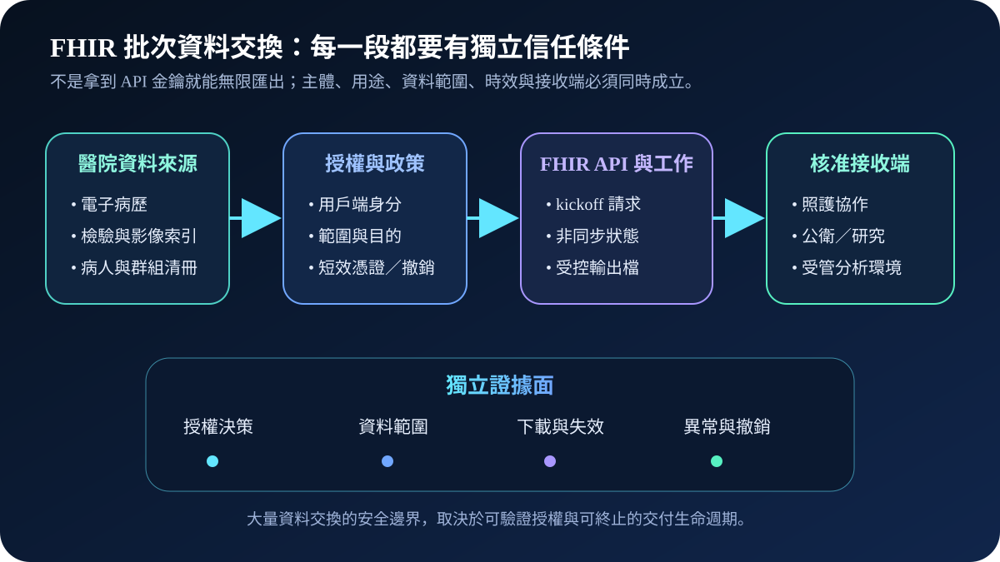
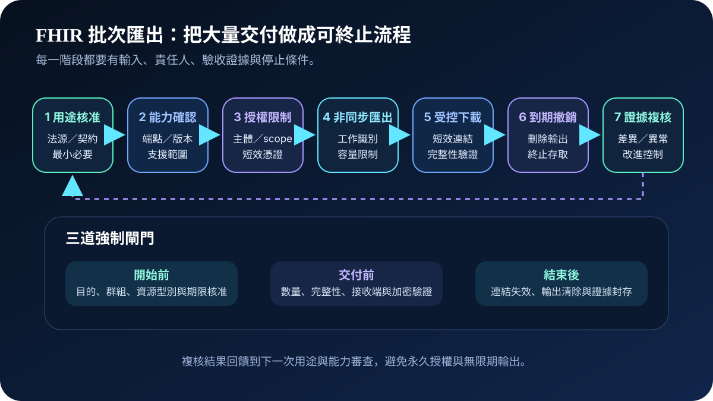
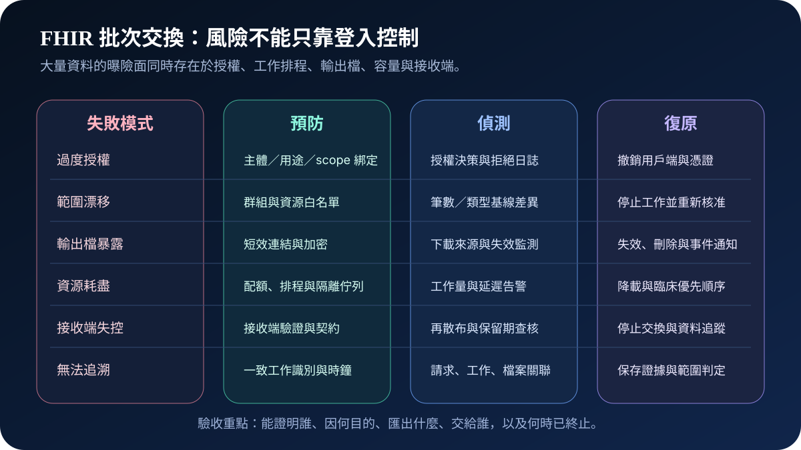

醫療資安國際觀察 · 2026-09-28
FHIR 批次資料交換如何避免一次匯出擴大風險：從用途授權到輸出失效
作者：Dr. William｜醫療資訊與資安治理實務工作者
FHIR Bulk Data 可讓核准系統以非同步方式匯出大量病人、群組或系統層級資料。交換效率提高後，單次錯誤授權、過寬範圍或長時間可下載的輸出檔，也可能把局部 API 風險放大成大量資料事件。
名詞解釋：批次匯出不是一般查詢放大版
FHIR是以資源與 API 交換健康資料的標準；Bulk Data Access定義大量資料的非同步匯出流程，通常包含啟動工作、查詢狀態與取得輸出檔；SMART Backend Services讓後端服務以受授權身分取得存取權；scope限制可存取的資料與能力。安全邊界還包括匯出群組、資源型別、時間範圍、輸出位置、下載期限與接收端用途。
國際現況與適用邊界
美國 CMS 於 2026 年 7 月 4 日發布 Health Technology Ecosystem Interoperability Framework，提出自願性互通性架構與信任、API、身分及目錄等方向，目標是降低資料交換摩擦。其內容屬美國政策與產業協作情境，不是台灣醫療機構的法定義務。
NIST 於 2026 年 3 月 13 日更新 SP 800-228 公開草案，將雲原生 API 防護分成發現、風險評估、執行期保護與持續監測；HL7 於 2025 年 12 月發布 FHIR Bulk Data Access Implementation Guide 3.0.0，定義非同步匯出與後端服務授權的技術流程。美國 HHS 醫療與公共衛生部門網路安全績效目標另把資產清冊、獨立憑證、事件規劃與集中日誌列為醫療組織可採用的控制基線。NIST 文件是美國聯邦技術指引草案，HHS 目標屬美國醫療部門建議，HL7 文件是實作規格；三者都不等同台灣法規或單一產品驗收標準。
對台灣醫療機構的適用方式：可將國際資料轉化為院內 API 與資料治理控制，例如用途核准、最小必要、接收端驗證、輸出檔期限、容量保護及可追溯證據。實際交換仍須依台灣法規、主管機關公告、契約、研究倫理、病人權益與個案臨床風險決定。
規劃：先定義一次匯出能造成多大影響
範圍至少涵蓋病人入口、跨院照護、公衛、研究、保險或受託分析交換。責任需分配給資料治理、臨床、API 平台、身分管理、資安、法遵及接收端。驗收指標可包含核准用途覆蓋率、用戶端清冊完整率、短效憑證比例、輸出連結有效時間、工作量上限、異常下載偵測時間、輸出刪除證據與定期再授權完成率。

實作：七階段建立可終止的交換閉環
- 核准用途：確認交換目的、資料最小必要、保留期限、接收端責任與停止條件。
- 確認能力：盤點 FHIR 版本、Bulk Data 端點、支援資源、群組、錯誤處理及離線替代方案。
- 限制授權：每個接收端使用獨立服務身分、短效憑證、明確 scope 與可撤銷信任設定。
- 隔離工作：為批次匯出設置工作識別、容量配額、佇列隔離、臨床優先順序與逾時終止。
- 保護輸出：輸出檔採短效下載、傳輸與儲存加密、完整性驗證及受控接收位置。
- 到期清除：工作完成後使連結失效、刪除暫存輸出、撤銷不再需要的權限並確認接收。
- 關聯複核：把授權、工作、檔案、下載、失效與異常事件串成可重建的證據鏈。
風險：輸出檔可能比 API 本身活得更久
常見失敗包括用戶端共用憑證、scope 過寬、未限制群組或資源型別、輸出網址長期有效、批次工作拖垮臨床 API、接收端二次散布無法追蹤，以及只保留成功日誌、未記錄拒絕與取消。控制需同時涵蓋預防、偵測、終止與復原。

可執行清單
- 每個批次交換是否有用途、資料範圍、接收端、期限與責任人？
- 每個接收端是否使用獨立服務身分、短效憑證與最小 scope？
- 是否限制可匯出的群組、資源型別、時間範圍、筆數與同時工作量？
- 輸出檔是否採短效連結、加密、完整性驗證與到期清除？
- 大量匯出是否與臨床即時 API 隔離，並有容量與降載保護？
- 接收端是否有保留期、再散布、刪除、事件通知與退出條件？
- 能否由日誌關聯請求、授權、工作、檔案、下載、取消與撤銷？
來源
- CMS｜Health Technology Ecosystem Interoperability Framework（發布：2026-07-04；查閱：2026-09-28）
- NIST｜SP 800-228: Guidelines for API Protection for Cloud-Native Systems, March 2026 Update（更新：2026-03-13；查閱：2026-09-28）
- HHS｜Healthcare and Public Health Cybersecurity Performance Goals（發布：2024-01；查閱：2026-09-28）
- HL7 International｜FHIR Bulk Data Access Implementation Guide 3.0.0（發布：2025-12-11；查閱：2026-09-28）
內容說明
本文依健康台灣深耕計畫相關治理內容整理，並參考 CMS、NIST 與 HL7 公開資料，提出台灣醫療機構可採用的用途核准、授權限制、非同步工作、輸出檔保護、容量治理及撤銷證據方法；不把美國政策、聯邦技術草案或國際實作規格視為台灣法定義務，也不取代主管機關公告、契約判讀、法律意見、研究倫理審查或個案臨床風險評估。